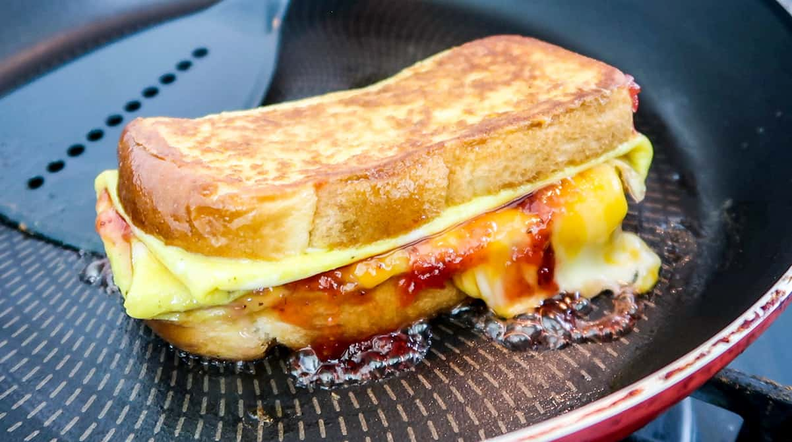

Description:
The One Pan Egg Toast is a delicious piece of egg toast made with only one pan!
There are also two iterations of the toast as well.
Ingredients:
One-Pan Egg Toast
- 2 Large Eggs
- 1 Slice Sandwich Bread
- Few Shakes Salt
- Few slices Butter
Cheese and Strawberry Jam
- Few slices of cheddar cheese
- Small scoop strawberry jam
Canadian Bacon and Swiss Cheese
- Few Slices Canadian Bacon
- Few Slice Swiss Cheese
Instructions:
Prep Ingredients:
- Cut one slice of bread in half.
- Whisk 2 eggs in a bowl. Beat it thoroughly. Season it with few sprinkles of Salt & Black Pepper.
- Dip the bread halves into the egg wash - coat only one side. Briefly set aside.
Make Breakfast Sandwich
- Place some butter into your frying pan. Place on low heat. Once butter melts and covers the entire pan, add-in the egg mixture.
- Immediately place-on the bread halves into the middle of the egg (egg-coated part facing up). Give it a slight nudge so the bread halves settles into the egg. Then do nothing - allow the egg to cook - don't touch it.
- After the egg has set, it should lift easily off the frying pan. Carefully flip it using a spatula. Then fold the eggs that are hanging over the bread inwards to make a rectangular shape.
- Place on your toppings of choice: Cheese & Jam, Ham & Cheese
- Carefully fold the sandwich in half. And give it a few minutes to cook, so that the cheese on the inside will melt.
- Next, place a small dab of butter into the pan. Give both sides about a 30-45 seconds in the butter to get a nice golden crispy top.
- Eat with your hands, or get a knife and fork! Bon Appetit ya'll!